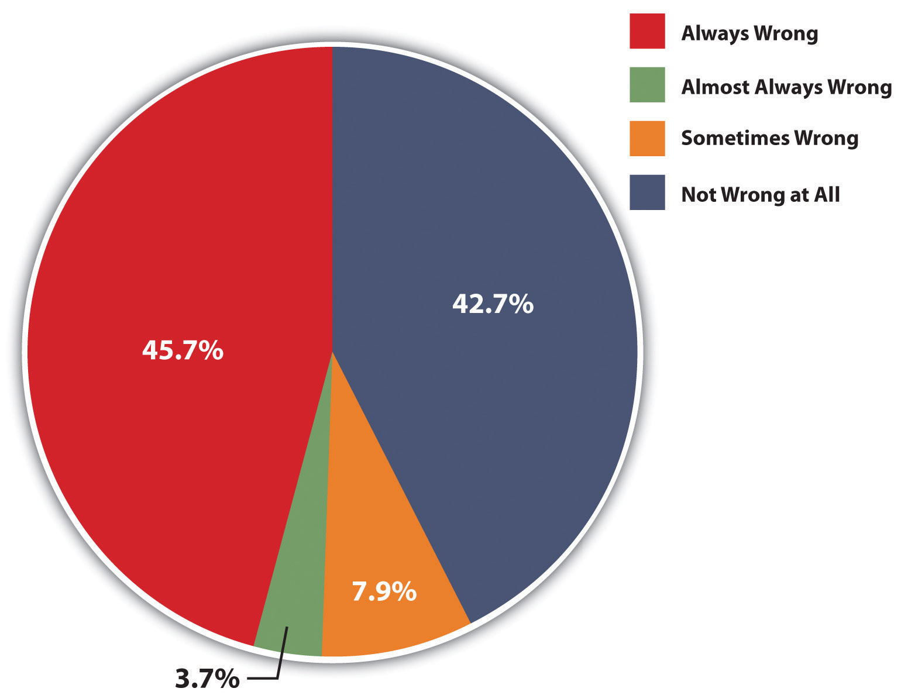
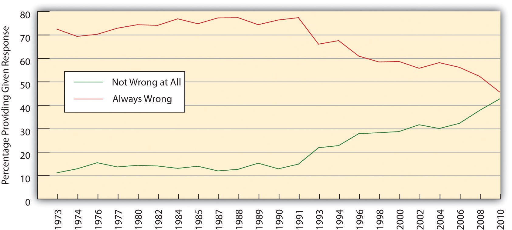
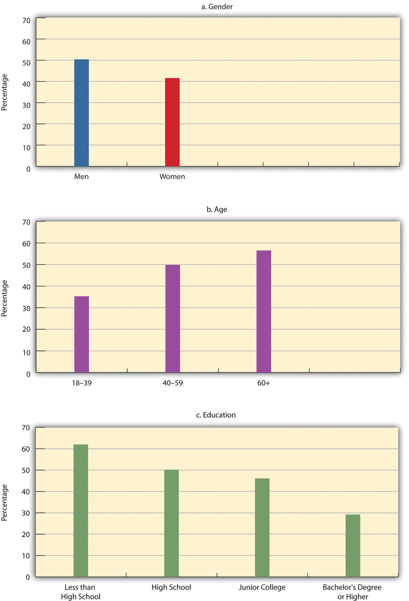
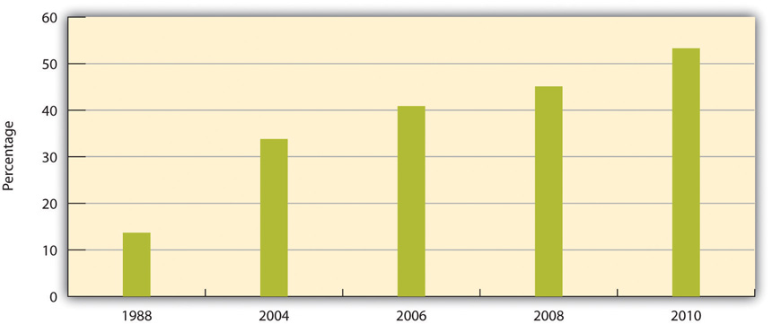

As noted earlier, views about gays and lesbians have certainly been very negative over the centuries in the areas of the world, such as Europe and the Americas, that mostly follow the Judeo-Christian tradition. There is no question that the Bible condemns homosexuality, with perhaps the most quoted Biblical passages in this regard found in Leviticus:
The important question, though, is to what extent these passages should be interpreted literally. Certainly very few people today believe that male homosexuals should be executed, despite what Leviticus 20:13 declares. Still, many people who condemn homosexuality cite passages like Leviticus 18:22 and Leviticus 20:13 as reasons for their negative views.
This is not a theology text, but it is appropriate to mention briefly two points that many religious scholars make about what the Bible says about homosexuality (Helminiak, 2000; Via & Gagnon, 2003).Helminiak, D. A. (2000). What the Bible really says about homosexuality. Tajique, NM: Alamo Square Press; Via, D. O., & Gagnon, R. A. J. (2003). Homosexuality and the Bible: Two views. Minneapolis, MN: Fortress Press. First, English translations of the Bible’s antigay passages may distort their original meanings, and various contextual studies of the Bible suggest that these passages did not, in fact, make blanket condemnations about homosexuality.
Second, and perhaps more important, most people “pick and choose” what they decide to believe from the Bible and what they decide not to believe. Although the Bible is a great source of inspiration for many people, most individuals are inconsistent when it comes to choosing which Biblical beliefs to believe and about which beliefs not to believe. For example, if someone chooses to disapprove of homosexuality because the Bible condemns it, why does this person not also choose to believe that gay men should be executed, which is precisely what Leviticus 20:13 dictates? Further, the Bible calls for many practices and specifies many penalties that even very devout people do not follow or believe. For example, most people except for devout Jews do not keep kosher, even though the Bible says that everyone should do this, and most people certainly do not believe people who commit adultery, engage in premarital sex, or work on the Sabbath should be executed, even though the Bible says that such people should be executed. Citing the inconsistency with which most people follow Biblical commands, many religious scholars say it is inappropriate to base public views about homosexuality on what the Bible says about it.
We now turn our attention to social science evidence on views about LGBT behavior and individuals. We first look at negative attitudes and then discuss a few other views.
We saw in earlier chapters that racism refers to negative views about, and practices toward, people of color, and that sexism refers to negative views about, and practices toward, women. HeterosexismNegative views about, and discriminatory practices toward, LGBT individuals and their sexual behavior. is the analogous term for negative views about, and discriminatory practices toward, LGBT individuals and their sexual behavior.
There are many types of negative views about LGBT and thus many ways to measure heterosexism. The General Social Survey (GSS), given regularly to a national sample of US residents, asks whether respondents think that “sexual relations between two adults of the same sex” are always wrong, almost always wrong, sometimes wrong, or not wrong at all. In 2010, almost 46 percent of respondents said same-sex relations are “always wrong,” and 43 percent responded they are “not wrong at all” (see Figure 5.1 "Opinion about “Sexual Relations between Two Adults of the Same Sex,” 2010").
Figure 5.1 Opinion about “Sexual Relations between Two Adults of the Same Sex,” 2010
Source: Data from General Social Survey. (2010). Retrieved from http://sda.berkeley.edu/cgi-bin/hsda?harcsda+gss10.
As another way of measuring heterosexism, the Gallup poll asks whether “gay or lesbian relations” are “morally acceptable or morally wrong” (Gallup, 2011).Gallup. (2011). Gay and lesbian rights. Gallup. Retrieved September 4, 2011, from http://www.gallup.com/poll/1651/gay-lesbian-rights.aspx. In 2011, 56 percent of Gallup respondents answered “morally acceptable,” while 39 percent replied “morally wrong.”
Although Figure 5.1 "Opinion about “Sexual Relations between Two Adults of the Same Sex,” 2010" shows that 57.3 percent of Americans (= 45.7 + 3.7 + 7.9) think that same-sex relations are at least sometimes wrong, public views regarding LGBT have notably become more positive over the past few decades. We can see evidence of this trend in Figure 5.2 "Changes in Opinion about “Sexual Relations between Two Adults of the Same Sex,” 1973–2010", which shows that the percentage of GSS respondents who say same-sex relations are “always wrong” has dropped considerably since the GSS first asked this question in 1973, while the percentage who respond “not wrong at all” has risen considerably, with both these changes occurring since the early 1990s.
Figure 5.2 Changes in Opinion about “Sexual Relations between Two Adults of the Same Sex,” 1973–2010
Source: Data from General Social Surveys. (1973–2010). Retrieved from http://sda.berkeley.edu/cgi-bin/hsda?harcsda+gss10.
Trends in Gallup data confirm that public views regarding homosexuality have become more positive in recent times. Recall that 56 percent of Gallup respondents in 2011 called same-sex relations “morally acceptable,” while 39 percent replied “morally wrong.” Ten years earlier, these percentages were 40 percent and 53 percent, respectively, representing a marked shift in public opinion in just a decade.
Scholars have investigated the sociodemographic factors that predict heterosexist attitudes. Reflecting the sociological axiom that our social backgrounds influence our attitudes and behavior, several aspects of our social backgrounds influence views about gays and lesbians. Among the most influential of these factors are gender, age, education, region of residence, and religion. We can illustrate each of these influences with the GSS question on whether same-sex relations are wrong, using the response “always wrong” as a measure of heterosexism.
Figure 5.3 Correlates of Heterosexism (Percentage Saying That Same-Sex Relations Are “Always Wrong”)
Source: Data from General Social Survey. (2010). Retrieved from http://sda.berkeley.edu/cgi-bin/hsda?harcsda+gss10.
The age difference in heterosexism is perhaps particularly interesting. Many studies find that young people—those younger than 30—are especially accepting of homosexuality and of same-sex marriage. As older people, who have more negative views, pass away, it is likely that public opinion as a whole will become more accepting of homosexuality and issues related to it. Scholars think this trend will further the legalization of same-sex marriage and the establishment of other laws and policies that will reduce the discrimination and inequality that the LGBT community experiences (Gelman, Lax, & Phillips, 2010).Gelman, A., Lax, J., & Phillips, J. (2010, August 22). Over time, a gay marriage groundswell. New York Times, p. WK3.
Earlier we discussed scholarly research on the origins of sexual orientation. In this regard, it is interesting to note that the US public is rather split over the issue of whether sexual orientation is in-born or instead the result of environmental factors, and also over the closely related issue of whether it is something people are able to choose. A 2011 Gallup poll asked, “In your view, is being gay or lesbian something a person is born with, or due to factors such as upbringing and environment?” (Jones, 2011).Jones, Jeffrey M. (2011). Support for legal gay relations hits new high. Retrieved from http://www.gallup.com/poll/147785/Support-Legal-Gay-Relations-Hits-New-High.aspx. Forty percent of respondents replied that sexual orientation is in-born, while 42 percent said it stems from upbringing and/or environment. The 40 percent in-born figure represented a sharp increase from the 13 percent figure that Gallup obtained when it first asked this question in 1977. A 2010 CBS News poll, asked, “Do you think being homosexual is something people choose to be, or do you think it is something they cannot change?” (CBS News, 2010).CBS News. (2010, June 9). CBS News poll: Views of gays and lesbians. Retrieved from http://www.cbsnews.com/htdocs/pdf/poll_gays_lesbians_060910.pdf. About 36 percent of respondents replied that homosexuality is a choice, while 51 percent said it is something that cannot be changed, with the remainder saying they did not know or providing no answer. The 51 percent “cannot change” figure represented an increase from the 43 percent figure that CBS News obtained when it first asked this question in 1993.
The next section discusses several issues that demonstrate inequality based on sexual orientation. Because these issues are so controversial, public opinion polls have included many questions about them. We examine public views on some of these issues in this section.
A first issue is same-sex marriage. The 2010 GSS asked whether respondents agree that “homosexual couples should have the right to marry one another”: 53.3 percent of respondents who expressed an opinion agreed with this statement, and 46.7 percent disagreed, indicating a slight majority in favor of legalizing same-sex marriage (SDA, 2010).SDA. (2010). GSS 1972–2010 cumulative datafile. Retrieved from http://sda.berkeley.edu/cgi-bin/hsda?harcsda+gss10. In 2011, an ABC News/Washington Post poll asked about same-sex marriage in a slightly different way: “Do you think it should be legal or illegal for gay and lesbian couples to get married?” A majority, 51 percent, of respondents replied “legal,” and 45 percent replied “illegal” (Langer, 2011).Langer, Gary. (2011). Support for gay marriage reaches a milestone. Retrieved from http://abcnews.go.com/Politics/support-gay-marriage-reaches-milestone-half-americans-support/story?id=13159608#.T66_kp9YtQp. Although only bare majorities now favor legalizing same-sex marriage, public views on this issue have become much more positive in recent years. We can see dramatic evidence of this trend in Figure 5.4 "Changes in Opinion about Same-Sex Marriage, 1988–2010 (Percentage Agreeing That Same-Sex Couples Should Have the Right to Marry; Those Expressing No Opinion Excluded from Analysis)", which shows that the percentage agreeing with the GSS question on the right of same-sex couples to marry has risen considerably during the past quarter-century.
Figure 5.4 Changes in Opinion about Same-Sex Marriage, 1988–2010 (Percentage Agreeing That Same-Sex Couples Should Have the Right to Marry; Those Expressing No Opinion Excluded from Analysis)
Source: Data from General Social Surveys. (1988–2010). Retrieved from http://sda.berkeley.edu/cgi-bin/hsda?harcsda+gss10.
In a related topic, public opinion about same-sex couples as parents has also become more favorable in recent years. In 2007, 50 percent of the public said that the increasing number of same-sex couples raising children was “a bad thing” for society. By 2011, this figure had declined to 35 percent, a remarkable decrease in just four years (Pew Research Center, 2011).Pew Research Center. (2011). 35%—Disapprove of gay and lesbian couples raising children. Retrieved from http://pewresearch.org/databank/dailynumber/?NumberID=1253.
A second LGBT issue that has aroused public debate involves the right of gays and lesbians to serve in the military, which we discuss further later in this chapter. A 2010 ABC News/Washington Post poll asked whether “gays and lesbians who do not publicly disclose their sexual orientation should be allowed to serve in the military” (Mokrzycki, 2010).Mokrzycki, Mike. (2010). Support for gays in the military crosses ideological, party lines. Retrieved from http://abcnews.go.com/PollingUnit/poll-support-gays-military-crosses-ideological-party-lines/story?id=9811516#.T67A659YtQo. About 83 percent of respondents replied they “should be allowed,” up considerably from the 63 percent figure that this poll obtained when it first asked this question in 1993 (Saad, 2008).Saad, Lydia. (2008). Americans evenly divided on morality of homosexuality. Retrieved from http://www.gallup.com/poll/108115/americans-evenly-divided-morality-homosexuality.aspx.
A third issue involves the right of gays and lesbians to be free from job discrimination based on their sexual orientation, as federal law does not prohibit such discrimination. A 2008 Gallup poll asked whether “homosexuals should or should not have equal rights in terms of job opportunities.” About 89 percent of respondents replied that there “should be” such rights, and only 8 percent said there “should not be” such rights. The 89 percent figure represented a large increase from the 56 percent figure that Gallup obtained in 1977 when Gallup first asked this question.
We have had limited space to discuss public views on LGBT topics, but two brief conclusions are apparent from the discussion. First, although the public remains sharply divided on various LGBT issues and much of the public remains heterosexist, views about LGBT behavior and certain rights of the LGBT community have become markedly more positive in recent decades. This trend matches what we saw in earlier chapters regarding views concerning people of color and women. The United States has without question become less racist, less sexist, and less heterosexist since the 1970s.
Second, certain aspects of people’s sociodemographic backgrounds influence the extent to which they do, or do not, hold heterosexist attitudes. This conclusion is not surprising, as sociology has long since demonstrated that social backgrounds influence many types of attitudes and behaviors, but the influence we saw earlier of sociodemographic factors on heterosexism was striking nonetheless. These factors would no doubt also be relevant for understanding differences in views on other LGBT issues. As you think about your own views, perhaps you can recognize why you might hold these views based on your gender, age, education, and other aspects of your social background.